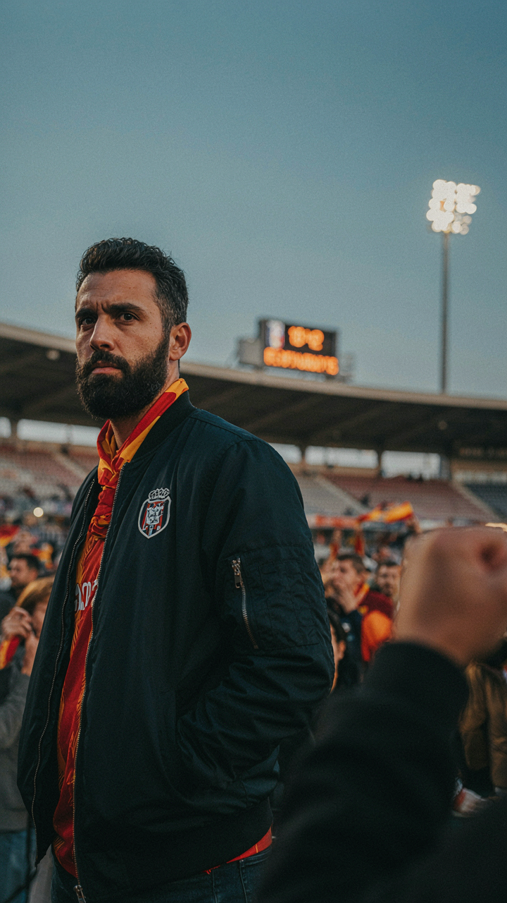

No prometemos decir que sí a todo. Prometemos responder.
01
Escuchamos
Peñas, jóvenes, familias y abonados comparten necesidades reales.
02
Decidimos
Cada propuesta recibe un estado claro y una explicación.
03
Publicamos
Compartimos qué haremos, quién lo hará y cuándo volveremos.
Pensado para la grada organizada
Álvaro no pide promesas. Pide participación real.
Tiene 34 años, participa en una peña y organiza su semana alrededor del fútbol. Es directo, apasionado y puede convertirse en embajador si se le escucha de verdad.

Álvaro Sánchez · 34
Miembro activo de una peña
“La identidad de la grada también debe contar.”
El tablero
La confianza se construye con fechas y nombres.
El piloto empieza con precios, ambiente y partidos de menor demanda. Tras dos encuentros se publica el resultado.
Nos dijisteis / Haremos
Ambiente en partidos de baja demanda En prueba · Cupos para peñas
Más voces jóvenes Pendiente · 3 plazas
Pon una propuesta sobre la mesa.
Cuéntanos qué debería escuchar el próximo consejo.